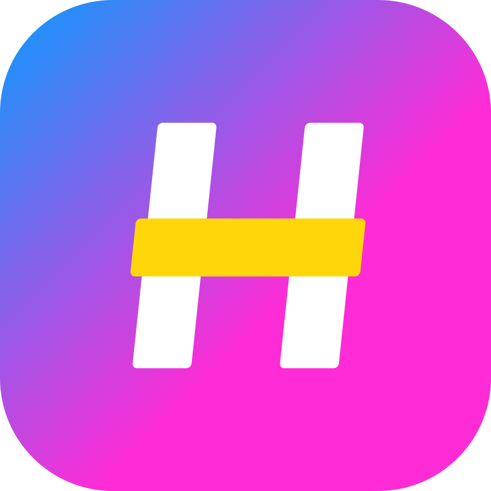
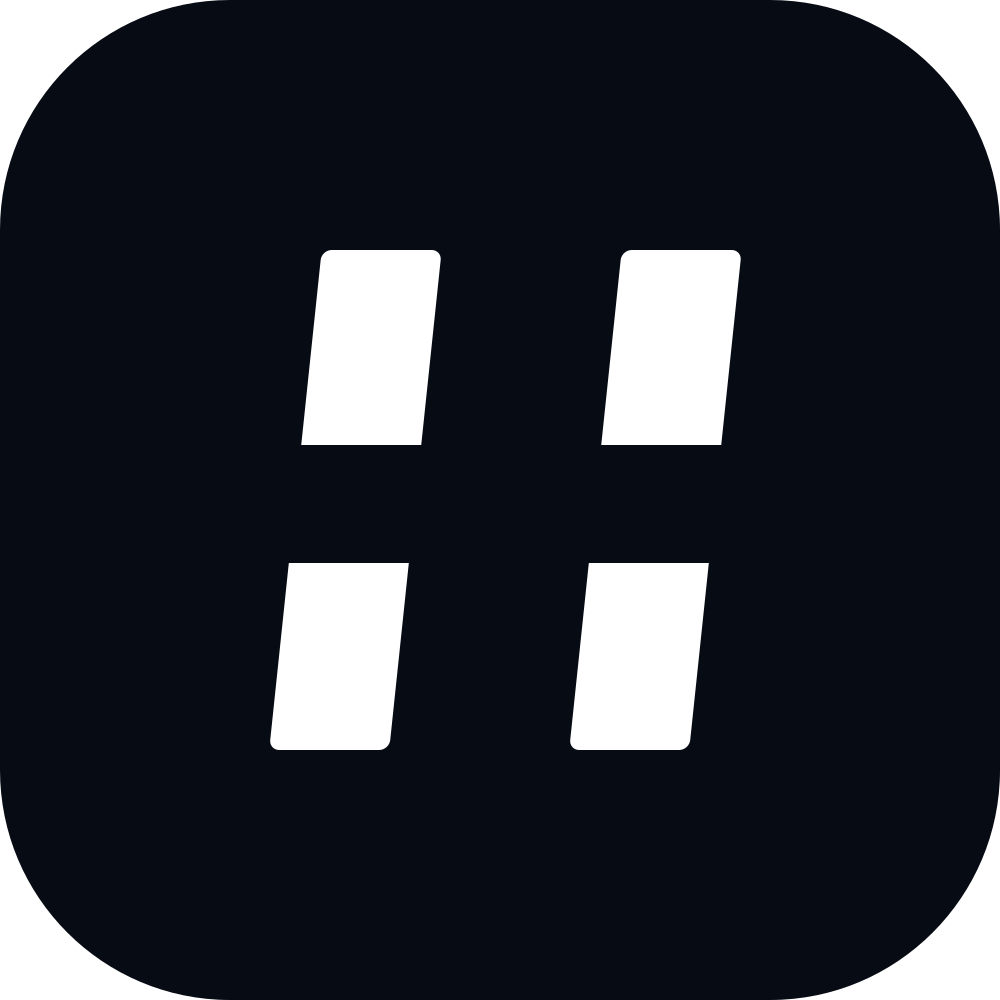
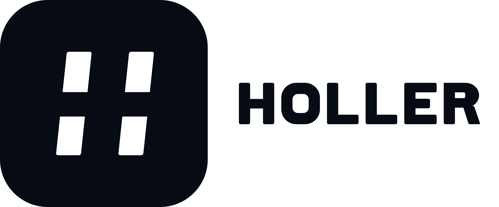
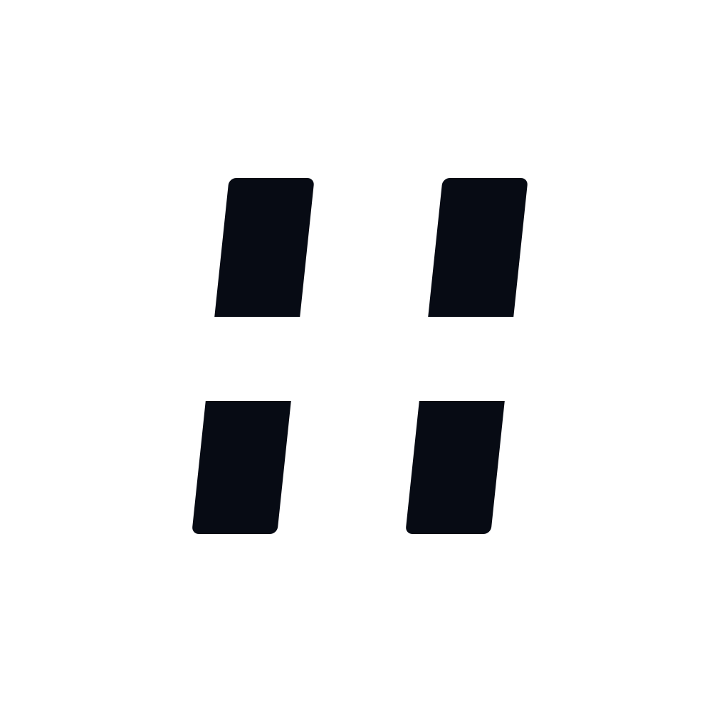
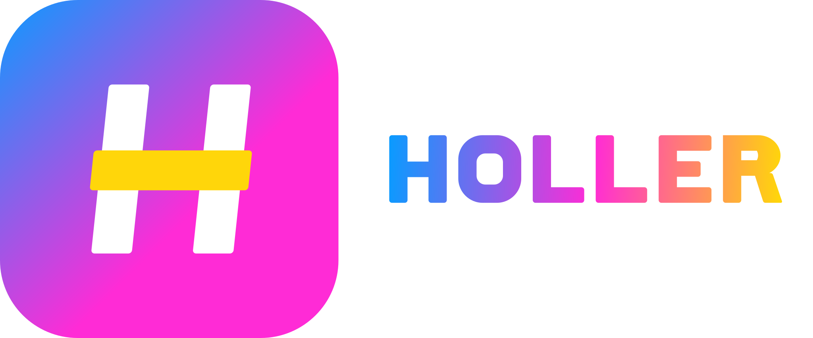
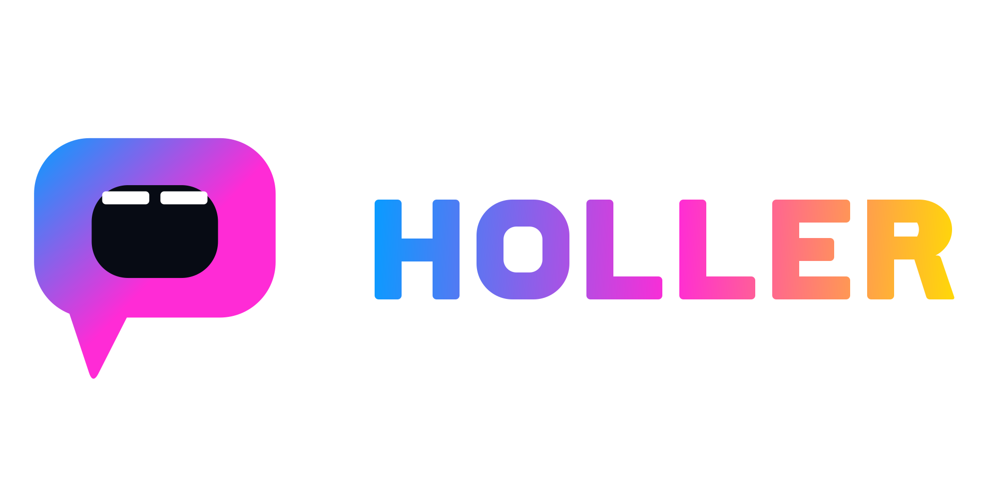
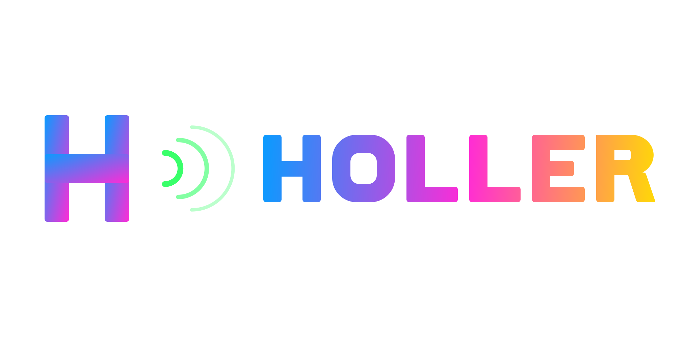
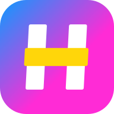

A primary lockup and a standalone mark for a consumer app about internet fan culture. Arena energy, chunky letterforms, a neon edge that survives a 16 px favicon and a busy stream behind it. Everything on this page is drawn as vector paths — no fonts, no stock, no templates.
The brief's two hard tests: the mark has to read at 16 px, the lockup at 160 px wide. Shown on white and on the product's near-black.




One recommendation and two alternates, each with a full variant set. A is the primary; B and C exist to show the range the mark could take.

Geometric. A sheared H inside a gradient tile — the crossbar is the shout.
Mascot. An open mouth with two teeth: the app is literally a place to yell.
Web3 modern. Gradient monogram with radiating echo arcs.The places the brief actually names: browser tab, app header, social avatar, merch, and a small placement over video.

HollerKept from the current palette, rebalanced so azure→magenta carries the brand and yellow is an accent, never a base. No red: the record-dot problem is designed out.
Minimum clear space on all four sides equals the height of the H crossbar (in the lockup: one stem width). Nothing enters that box — no type, no edge of a card, no other logo.
Mark: 16 px digital, 10 mm print. Lockup: 160 px wide digital, 35 mm print. Below 160 px the wordmark drops and only the mark is used.
“Holler” is a verb about volume, and the audience is a crowd — so the system is built on one idea: a shape that occupies space. The mark is a solid tile with a single strong cut, not a thin line drawing, because a line mark disappears in a tab strip and dies in a 16 px favicon.
The letterforms are custom geometry: 54-unit stems on a 200-unit cap height, near-square counters, 8-unit corners. That is deliberately heavier than a normal grotesque — it reads as painted-on-a-wall rather than set-in-a-deck. The H is sheared 6° so it leans into the room without becoming a full italic.
The crossbar in yellow is the shout. It is the only element that breaks the tile's grid, and it is the one thing you still see when everything else is scaled away.
Why no red record dot. The reference used one; it reads as camera-on and alarms people who leave the tab open. Nothing in this system is red, and nothing is a bare circle — the tile is the container, so the mark never reads as a status light.
Why B and C still ship. B is the mascot route: an open mouth is the most literal reading of “holler” and it gives the brand a face for social. C is the growth route: the echo arcs give motion for a product that is about reacting in real time. Both are complete variant sets, so the choice is a strategy call, not a redraw.
-apple-system, Helvetica Neue, Arial) and is not part
of the logo artwork.Editable SVG source, transparent PNGs at 512 / 1024 / 2048, favicon and app icons, the evidence sheet, and the busy-frame test image.
source repository · built for the Holler logo-system brief on Taskmarket